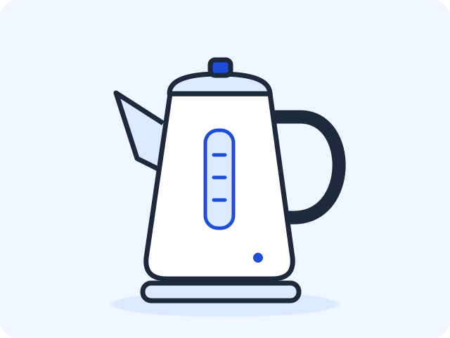

Вариант 00 — Техника дома
«Техника дома · V00» — отдельный демонстрационный пример преподавателя. Студентам вариант 00 не назначается. В статьях занятий на нём показан способ работы; студенты применяют этот способ к данным своего варианта.
Этот лист содержит тексты, изображения и требования к результату, без готового решения. Код и последовательность действий находятся в статьях занятий.
Этап: главная, каталог и форма — пары 13–14
Продолжается учебный веб-проект Variant00-web: основное содержание трёх страниц идёт сверху вниз, меню — горизонтально с переносом; используются общий style.css и папка images.
| Занятие | Результат примера |
|---|---|
| 13 — главная и каталог | index.html, отдельный catalog.html, общий style.css и папка images; переходы между страницами; три позиции каталога |
| 14 — HTML-форма | form.html, связанные подписи и поля, навигация между тремя страницами и локальная проверка ввода |
Предыдущие шаги: 10 — первая HTML-страница, 11 — проверка и дополнение страницы, 12 — смысловые части и внешний CSS. JavaScript, сервер и сохранение заказов на текущем этапе не используются.
Обязательный минимум и порядок работы
Это лист данных для примера, а пошаговый самостоятельный маршрут, помощь при ошибках и дополнительные задания находятся в статьях пар 13–14. После каждого шага сверяйте результат самостоятельно; подтверждение преподавателя нужно только при итоговом показе. Если минимум уже готов, выполните самопроверку и переходите к продолжению своей пары.
| Этап | Обязательный результат | Как используется пример |
|---|---|---|
| Пара 13 | Главная и каталог, три полные позиции, общий CSS, изображения и горизонтальное меню | Первая позиция — холодильник по образцу; вторая — стиральная машина по структуре; третья — электрочайник самостоятельно |
| Пара 14 | Три связанные страницы, шесть элементов формы, связанные подписи и проверка ввода | Данные формы ниже; способ сборки и проверки — в статье пары 14 |
В студенческой работе вместо этих названий используются данные собственного номера, включая порядок элементов формы. Дополнительные задания выполняются после минимума и не являются условием начала следующей пары. При затруднении сначала используйте помощь в статье; если ошибка сохраняется, сформулируйте, какой файл меняли, какой результат ожидали и что проверили.
Содержание главной страницы
| Элемент | Текст или изображение |
|---|---|
| Название приложения | Техника дома · V00 |
| Заголовок главной | Бытовая техника для дома |
| Короткое пояснение | Выберите технику для повседневных дел |
| Описание | Три прибора для кухни и дома. Сравните характеристики и выберите нужный товар. |
| Основное изображение | fridge.svg  |
| Название перехода к каталогу | Посмотреть технику |
| Название перехода к форме | Открыть форму заказа |
| Подпись в подвале | Учебный прототип · Вариант 00 |
На паре 13 главная сохраняет эти тексты, изображение и подпись. Ссылка «Посмотреть технику» ведёт на catalog.html; на паре 14 ссылка «Открыть форму заказа» ведёт на form.html.
Содержание каталога
Название — «Каталог техники». Пояснение — «Три товара с основными характеристиками».
| № | Название | Характеристика | Описание | Файл изображения |
|---|---|---|---|---|
| 1 | Холодильник | 300 л · 2 камеры | Для хранения свежих и замороженных продуктов | fridge.svg |
| 2 | Стиральная машина | 7 кг · 1000 об/мин | Для стирки повседневной одежды | washer.svg  |
| 3 | Электрочайник | 1,7 л · 2000 Вт | Для быстрого нагрева воды | kettle.svg  |
Скопируйте SVG-файлы в папку images веб-проекта по инструкции занятия. Это нейтральные учебные иллюстрации без брендов, созданные для данного примера; рисовать их студентам не требуется.
Используйте все три позиции в указанном порядке. Каждая позиция — отдельный article с названием в h2, изображением с содержательным alt, характеристикой и описанием. Блоки идут сверху вниз. Каталог содержит переход на главную; на паре 14 добавляется переход к форме.
Содержание формы — пара 14
Название формы — «Заказ техники». У каждого поля есть видимая подпись, связанная с элементом через for и id. Для отправляемых элементов задаются name.
| Подпись | Элемент и данные | Уточнение |
|---|---|---|
| Товар | select: Холодильник; Стиральная машина; Электрочайник |
Первая строка пустая; выбор обязателен |
| Количество единиц | Числовое поле | Минимум 1, шаг 1, начальное значение 1; поле обязательно |
| Комментарий к заказу | textarea |
Подсказка: «Например, удобный день доставки» |
| Нужна доставка | Независимый флажок | Выбран в начале |
| Нужна установка | Независимый флажок | Не выбран в начале |
| Срочность заказа | Ползунок от 1 до 5 | Начальное значение 3; края шкалы: «Не срочно» и «Срочно» |
Все шесть элементов таблицы входят в обязательный результат; порядок строк задаёт их расположение в примере 00. Флажки переключаются независимо.
Кнопка отправки — «Проверить заказ». Ссылка «Назад» ведёт на index.html. Из главной и каталога можно перейти к форме, из формы — вернуться на главную.
Отправка методом GET выполняется локально: страница перезагружается, а параметры видны в адресе. Сервер, хранение и обработка заказов отсутствуют. Настройка и объяснение — в статье 14.
Оформление текущего этапа
| Назначение | Код цвета | Образец |
|---|---|---|
| Фон | #EFF6FF |
|
| Основной текст | #1E293B |
|
| Акцент | #1D4ED8 |
- Общий
style.cssподключён ко всем трём страницам. Используются уже изученные правила CSS. - Навигация в
navоформлена через общий CSS: ссылки идут горизонтально, имеют отступы и рамки; в узком окне переносятся без перекрытия. Наведение и фокус с клавиатуры видимы. Способ оформления — в статье пары 13. - Изображения сохраняют пропорции; текст, ссылки, подписи и поля остаются доступны при сужении окна.
- Сложная компоновка не требуется: содержание и элементы формы идут сверху вниз.
Самопроверка пары 13
- Откройте
index.html→catalog.html→index.html: переходы работают, меню горизонтальное и переносится в узком окне. Ссылки доступны черезTabиEnter. - В каталоге ровно три основные позиции: холодильник, стиральная машина и электрочайник; тексты, изображения и порядок совпадают с таблицей. У каждой позиции свой
articleиh2. - Измените характеристику второй позиции, сохраните и обновите браузер: меняется только нужный текст. Верните исходное значение
7 кг · 1000 об/мин. - Обе страницы используют один
style.css; файлы изображений находятся вimagesпроекта.
Самопроверка пары 14
| Действие | Ожидаемый результат для примера 00 |
|---|---|
| Открыть форму через меню без параметров в адресе | Товар не выбран; количество 1; комментарий пустой; доставка включена, установка выключена; срочность 3 |
| Отправить без выбора товара | Браузер требует выбор |
| Выбрать товар, очистить количество и отправить | Браузер требует количество |
| При выбранном товаре ввести 0 или дробь | Успешная отправка запрещена: минимум 1, шаг 1 |
| Нажать подписи полей и флажков | Подпись обращается к своему элементу; флажки независимы |
| Выбрать товар и целое количество от 1, отправить | GET перезагружает страницу; параметры видны в адресе, сохранения заказа нет |
| Пройти главную, каталог, форму и «Назад» | Все переходы работают; оформление общее; «Назад» ведёт на главную |
После отправки снова откройте form.html через меню: проверяйте начальные значения при новом открытии, а не по заполненному состоянию до отправки. Вводите вымышленные учебные данные. Если проверка не пройдена, вернитесь к соответствующему шагу статьи, исправьте одну причину и повторите действие.
Продолжение после обязательного минимума
Пара 13: выделите текущую страницу в меню; затем создайте item.html с подробностями холодильника и двумя полезными учебными уточнениями, переходом из первой позиции и возвратом в каталог; затем выполните два улучшения после проверки клавиатуры и узкого окна. Основные три позиции и их данные сохраняются. Условия готовности и подсказки — в статье пары 13.
Пара 14: объедините соседние связанные поля в fieldset с legend, сохраняя их порядок; затем после шести исходных элементов добавьте необязательную учебную электронную почту с отдельной подписью и проверьте её в GET; затем улучшите удобство формы с клавиатуры. В примере можно сгруппировать доставку и установку под названием «Дополнительные возможности». Для проверки почты используйте student@example.com, а не реальный адрес. Подробные условия готовности — в статье пары 14. Группировка и новое поле не меняют исходные значения и ограничения шести обязательных элементов.
Итоговый показ
Сохраните папку проекта целиком. Подготовьте страницы в браузере и нужные HTML-файлы с style.css в редакторе. На паре 13 покажите маршрут и каталог; на паре 14 — переходы и проверки формы. На итоговом показе каждой пары выполняется одно короткое изменение по выбору преподавателя и объясняется, где оно сделано. Промежуточные показы и отдельный отчёт по каждому шагу не требуются. Законченные дополнительные задания показываются после обязательного результата.
Вернуться к выбору варианта или занятиям курса.